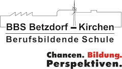
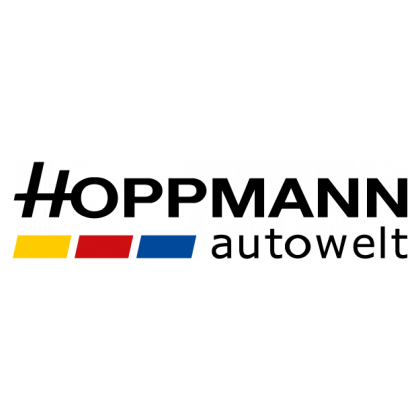

Since November 01, 2023
Job training / Ausbildung zum Anwendungsentwickler
I am a dedicated Frontend Developer currently in training at ONTIV GmbH, where I work on a variety of exciting projects. In my role, I build, modify, and debug customer-facing views using Angular 18, always focusing on clean code and excellent user experiences. I work closely with the MVC architecture and use C# to fix issues and support backend logic. Additionally, I write Unit Tests using .NET and C# to ensure code quality.
I have extensive experience working with databases and frequently use HeidiSQL, Docker, and Artificial Intelligence. For frontend development, I utilize various frameworks and technologies, including Bootstrap, Angular Material, and more. In my daily work, I use languages such as C#, TypeScript, HTML5, CSS3, CSHTML, and occasionally VB.
My goal is to continuously enhance my skills and create innovative, user-friendly solutions that combine both functionality and aesthetics.
August 23, 2021
Vocational Qualification in Computer Science & IT Specialist (Fachabitur Informatik & ITA Ausbildung)

In the two years at BBS Betzdorf-Kirchen, I have learned countless theoretical concepts in IT. Whether it's programming in Processing (Java), HTML, and CSS, or C#, we covered the basics of cybersecurity, networking, databases, and much more.
February 01, 2022
Intership / Praktikum

During my 16-week internship at Hoppmann Autowelt GmbH as a system integrator, which I voluntarily extended by two additional weeks, I gained a different perspective on IT. Instead of sitting in front of a computer, I replaced PCs, toner, or even entire printers. My main task was to support the IT team by taking over some of their responsibilities. When I worked on software-related tasks, such as writing a script in Batch, I found it far more enjoyable. This led me to decide to pursue a career in software development after school instead of focusing on hardware.
My hobbies include meeting friends and doing activities together, traveling to different cities with my girlfriend or going for walks, listening to and creating music (genre: underground techno – not as a DJ), geography, and, of course, everything related to IT.
BBS Betzdorf-Kirchen: Fundamentals in Java (Processing), HTML, CSS, networking basics, databases, C# .NET (OOP), and hardware.
Internship: Development of an RFID time tracking system with web-based display, hardware maintenance, PC building, and replacement.
Apprenticeship: Frontend development with Angular 18, Bootstrap, Razorviews (CSHTML), and PHP; API extensions with C#; working with Docker and databases (MySQL, SQLite).
Personal: Initial projects with Swift (weather app), Python scripting, server setup, using Windows, macOS, and Linux, planned smart home project.